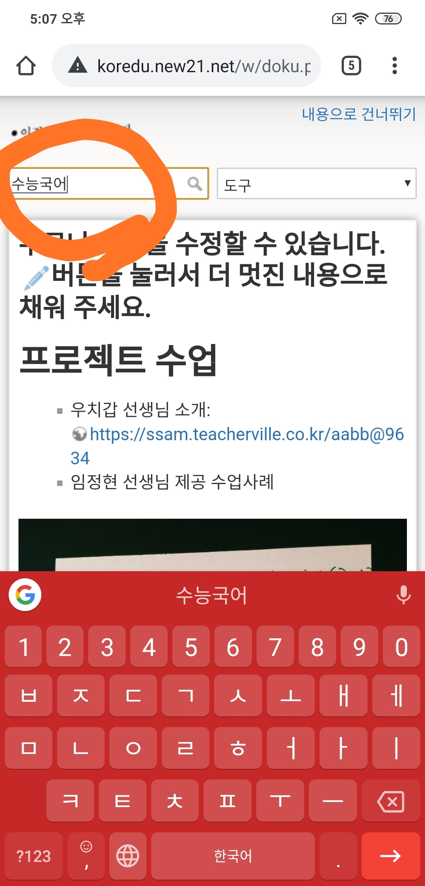
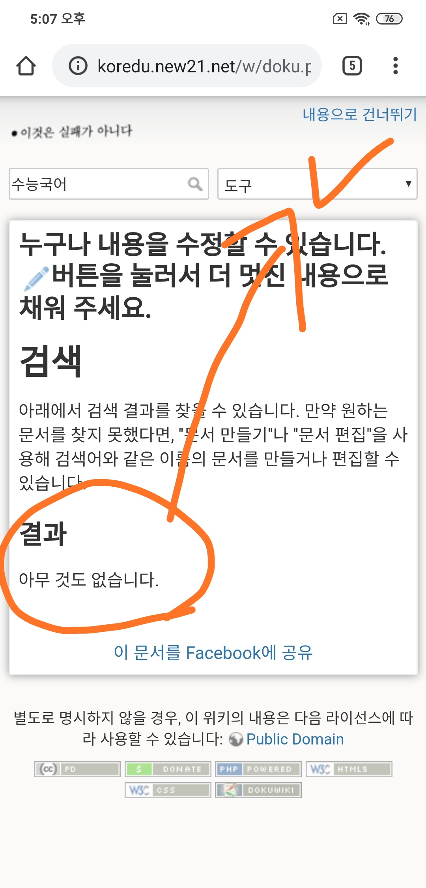
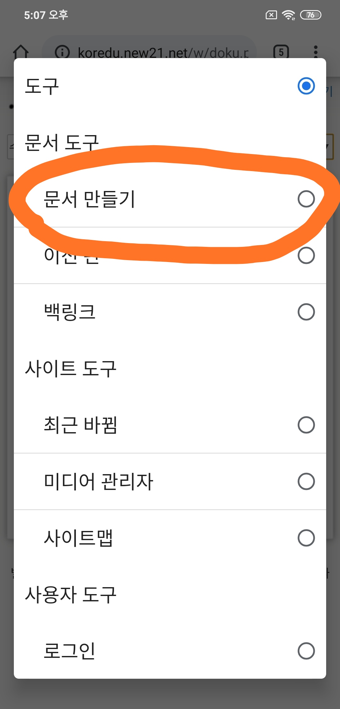
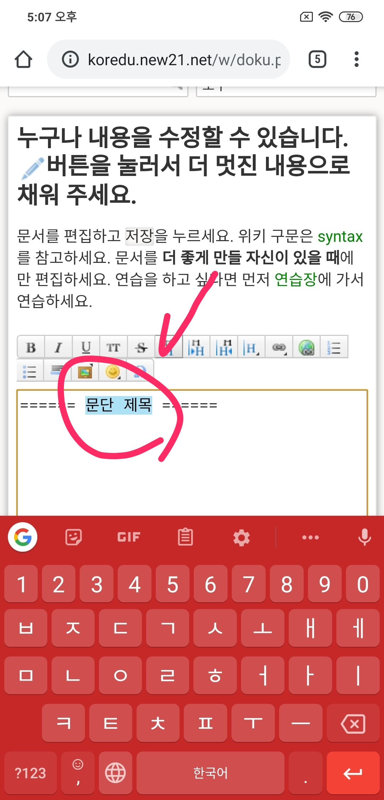
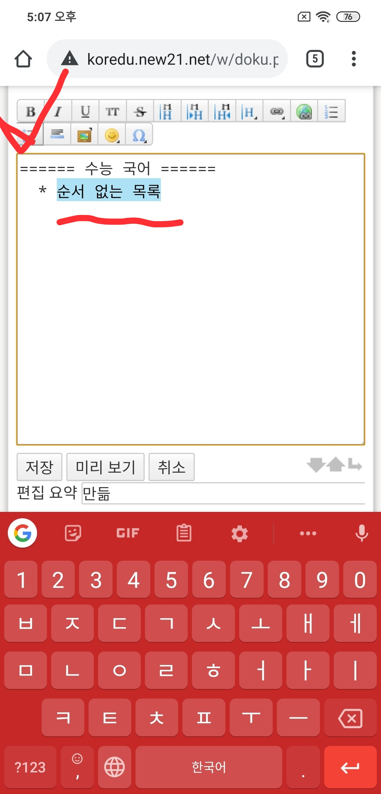
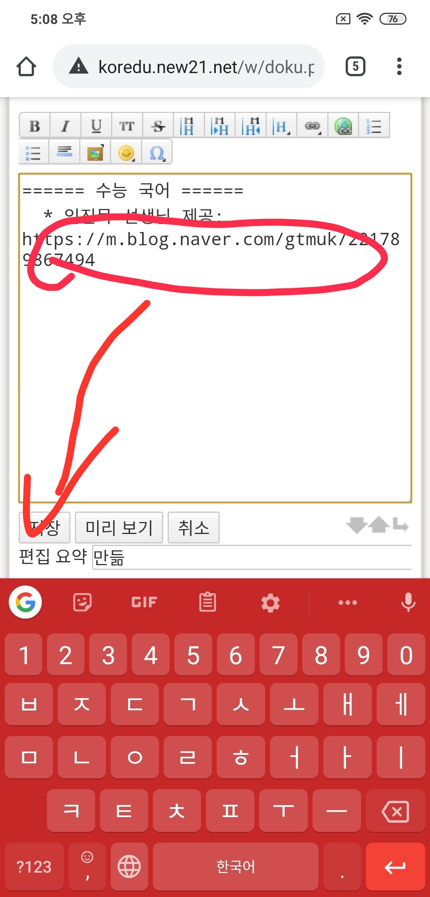
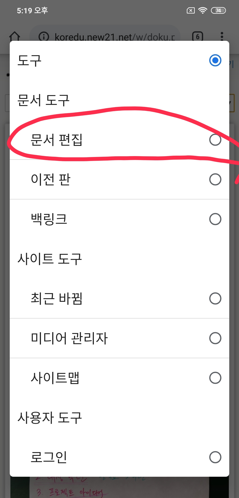
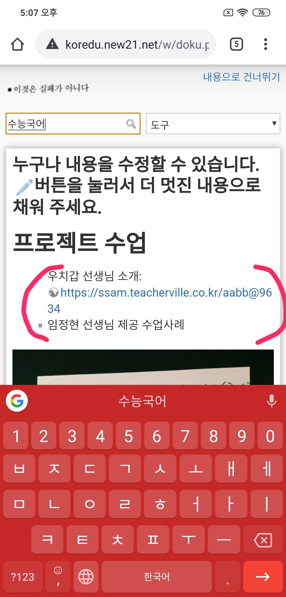
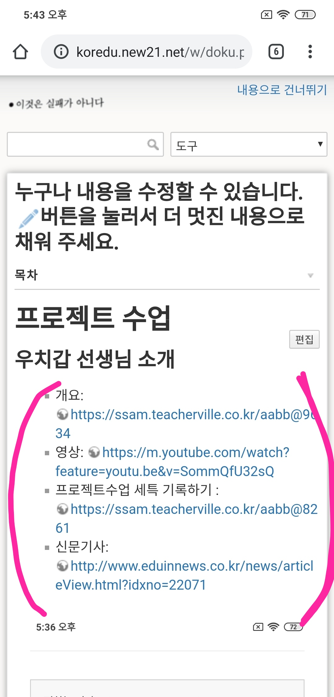

국어교육위키에서 글 올리는 방법(스마트폰 기준. PC도 비슷함)
1. 내가 공유하고픈 자료가 이미 있는지 검색해 봅니다.

2. 없네요. 맨 위의 "도구"를 터치해 봅니다.

3. "문서만들기"를 터치합니다.

4. 툴바의 아이콘을 이용해서 수업 자료 안내 글을 작성합니다.


5. 다 썼으면 저장하면 됩니다.

2-1. 내가 공유할 자료와 같은 제목이 이미 있다면?
2-1-1. "도구"를 눌러서 나온 메뉴 중 "문서 편집"을 누릅니다.

2-1-2. 이게 원래 글입니다.

2-1-3. 이런 내용이 추가되었습니다.

* 만약 글에 "그림"을 넣고 싶다면? →보러 가기